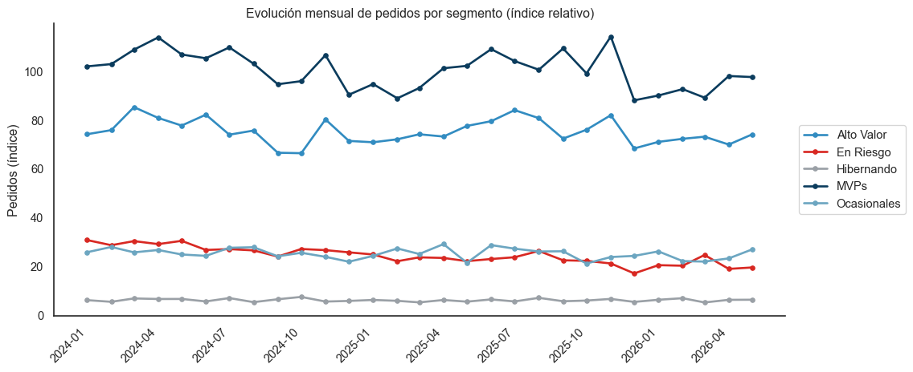

Hasta esta fase del proyecto sabíamos qué compra cada segmento (RFM y segmentación) y qué se compra junto (MBA). Faltaba la dimensión temporal: cuándo compran.
Esto importa para tres decisiones de marketing:
Programación de campañas: ¿a qué hora enviar el email para maximizar la tasa de apertura?
Picos estacionales: ¿cuándo aumentar inventario o presupuesto publicitario?
Detección de ralentización: ¿este mes está bajo o solo es estacionalidad?
Construimos tres agregados temporales que viven como parquets en el pipeline:
Output
Granularidad
Uso
temp_hora_dia.parquet
hora × día de la semana, por segmento
Curvas de actividad por hora y por día
temp_mensual.parquet
año-mes, por segmento
Serie temporal de volumen
temp_diario.parquet
día, por segmento (ventana 90 días)
Vista “Último mes”: tendencia diaria reciente
temp_bundles.parquet
año-mes × regla MBA top
Evolución temporal de bundles específicos
2. Un bug que importaba: el timezone
Antes de mostrar los resultados, vale la pena documentar un bug que casi nos hace publicar análisis incorrectos.
2.1 El síntoma
Las primeras versiones del heatmap mostraban que los MVPs compraban principalmente entre las 19:00 y las 22:00, con picos a las 21:00. Esto era extraño: el negocio B2B típicamente sigue horario laboral, no horario nocturno.
2.2 La causa
Los pedidos en MongoDB se guardan con timestamp en UTC. El pipeline original extraía hora = fecha.hour directamente sin conversión, así que un pedido hecho a las 14:00 hora CDMX (que en UTC son las 20:00) se contaba en la “hora 20”.
Cuando graficamos el heatmap, “20:00” se interpreta como hora del usuario que mira el dashboard — pero los datos estaban en UTC. Resultado: aparente actividad nocturna que en realidad era diurna.
La conversión se aplica antes de extraer hora/día/mes. Los pedidos se quedan en UTC en el parquet histórico (preservando la fuente), pero los agregados temporales viajan en hora local CDMX.
El rumbo que nos hizo tomar: cualquier feature derivado de un timestamp con timezone debe pasar explícitamente por tz_convert(). Una vez aprendida la lección, agregamos un test que valida que el heatmap concentre actividad en horas 9-18 (horario laboral en CDMX). El test falla automáticamente si alguien revierte el fix.
3. Actividad por hora y por día por segmento
Después del fix, el patrón es el esperado: actividad concentrada en horario laboral, con un pico a media mañana y otro a media tarde. Cada segmento tiene su propia firma.
En el dashboard esta vista evolucionó de heatmaps hora×día (uno por segmento) a dos gráficas de líneas: el porcentaje de pedidos de cada segmento por hora del día y por día de la semana. Las líneas dejan comparar todos los segmentos de un vistazo —algo difícil con varios heatmaps lado a lado—. Aquí reproducimos esas dos vistas con datos simulados que preservan las firmas reales.
Código
import pandas as pdimport numpy as npimport matplotlib.pyplot as pltimport seaborn as snsimport plotly.graph_objects as gosns.set_theme(style="white")SEGMENT_COLORS = {"MVPs": "#0B3C5D","Alto Valor": "#328CC1","Ocasionales": "#6CA6C1","En Riesgo": "#D82822","Hibernando": "#9AA0A6",}ORDEN =list(SEGMENT_COLORS)horas = np.arange(24)dias = ["Lunes", "Martes", "Miércoles", "Jueves", "Viernes", "Sábado", "Domingo"]rng = np.random.default_rng(42)# Pesos horarios sintéticos por segmento: pico matutino en premium,# vespertino en En Riesgo, sin pico claro en Hibernando.def _campana(pico, ancho, base=0.05):return base + np.exp(-0.5* ((horas - pico) / ancho) **2)perf_h = {"MVPs": _campana(11, 2.2),"Alto Valor": _campana(11, 1.8),"Ocasionales": _campana(12, 3.0),"En Riesgo": _campana(16, 2.2),"Hibernando": _campana(13, 5.0, base=0.25),}# Pesos por día de la semana: L-V altos, fin de semana bajo.perf_d = {"MVPs": np.array([1.00, 1.00, 1.00, 1.00, 0.95, 0.25, 0.05]),"Alto Valor": np.array([1.00, 1.00, 1.00, 0.95, 0.90, 0.15, 0.04]),"Ocasionales": np.array([0.90, 1.00, 1.00, 0.95, 1.00, 0.30, 0.08]),"En Riesgo": np.array([0.80, 0.90, 1.00, 1.00, 0.95, 0.35, 0.10]),"Hibernando": np.array([0.70, 0.80, 0.90, 0.85, 0.90, 0.50, 0.30]),}def _pct(v):"""Ruido leve + normalización a % (suma 100 por segmento).""" v = v * (1+ rng.uniform(-0.04, 0.04, size=v.shape))return v / v.sum() *100fig = go.Figure()for seg in ORDEN: fig.add_trace(go.Scatter( x=horas, y=_pct(perf_h[seg]), mode="lines+markers", name=seg, line=dict(color=SEGMENT_COLORS[seg], width=2.2), marker=dict(size=5), ))fig.update_layout( template="simple_white", height=380, xaxis=dict(title="Hora del día (local CDMX)", dtick=2), yaxis=dict(title="% del segmento", ticksuffix="%"), margin=dict(t=20, r=20, b=50, l=60),)fig.show()
(a) Actividad por hora del día — % de pedidos de cada segmento (réplica de la vista del dashboard, datos simulados).
(b)
Figura 1
Código
fig = go.Figure()for seg in ORDEN: fig.add_trace(go.Scatter( x=dias, y=_pct(perf_d[seg]), mode="lines+markers", name=seg, line=dict(color=SEGMENT_COLORS[seg], width=2.2), marker=dict(size=5), ))fig.update_layout( template="simple_white", height=380, xaxis=dict(title=""), yaxis=dict(title="% del segmento", ticksuffix="%"), margin=dict(t=20, r=20, b=50, l=60),)fig.show()
Figura 2: Actividad por día de la semana — % de pedidos de cada segmento (datos simulados).
3.1 Firmas observadas por segmento
Cada cluster tiene un patrón distinto. Resumimos las observaciones cualitativas más útiles:
Segmento
Pico principal
Patrón distintivo
MVPs
10:00 - 12:00 L-V
Activos toda la semana, baja muy poco en sábado
Alto Valor
10:00 - 12:00 L-V
Patrón similar a MVPs pero más concentrado en mañana
Ocasionales
11:00 - 13:00 L-V
Compras menos frecuentes, distribuidas más uniformemente
En Riesgo
15:00 - 17:00 L-V
Concentración en tarde, posible perfil de comprador final
Hibernando
Sin pico claro
Baja actividad general (esperado por definición del segmento)
El rumbo que nos hizo tomar: la diferencia entre el pico matutino de MVPs/Alto Valor (10:00-12:00) y el pico vespertino de En Riesgo (15:00-17:00) sugiere que son tipos de comprador diferentes, no solo “más” o “menos” activos. Esto se traduce en recomendaciones distintas para marketing:
Campañas de cross-sell para MVPs: enviar a las 9:30, interceptar el pico de las 10:00.
Campañas de reactivación para En Riesgo: enviar a las 14:30, interceptar el pico de las 15:00.
Si marketing usara la misma hora para todos los segmentos, perdería eficiencia en al menos uno.
4. Evolución mensual
El segundo agregado es el volumen mensual por segmento. Es útil para detectar tendencias macro y validar que los modelos no se “rompan” silenciosamente.
Código
SEGMENT_COLORS = {"MVPs": "#0B3C5D","Alto Valor": "#328CC1","Ocasionales": "#6CA6C1","En Riesgo": "#D82822","Hibernando": "#9AA0A6",}# Generación de series que reproducen el comportamiento real:# MVPs y Alto Valor estables con pico Buen Fin (Nov)# En Riesgo y Hibernando caen con el tiempomeses = pd.date_range(start="2024-01-01", end="2026-05-01", freq="MS")n =len(meses)np.random.seed(42)serie_mvp =100+8*np.sin(np.linspace(0, 4*np.pi, n)) + np.random.normal(0, 4, n)serie_av =75+6*np.sin(np.linspace(0, 4*np.pi, n)) + np.random.normal(0, 3, n)serie_oc =25+2*np.sin(np.linspace(0, 4*np.pi, n)) + np.random.normal(0, 2, n)serie_riesgo =30-0.4*np.arange(n) + np.random.normal(0, 2, n)serie_hib =6+ np.random.normal(0, 0.6, n)# Pico Buen Fin (Nov 2024 = idx 10, Nov 2025 = idx 22)for i in [10, 22]:if i < n: serie_mvp[i] *=1.18 serie_av[i] *=1.15df_mensual = pd.DataFrame({'Mes': list(meses) *5,'Segmento': ['MVPs']*n + ['Alto Valor']*n + ['Ocasionales']*n + ['En Riesgo']*n + ['Hibernando']*n,'Pedidos': np.concatenate([serie_mvp, serie_av, serie_oc, serie_riesgo, serie_hib]),})plt.figure(figsize=(12, 5))for seg, sub in df_mensual.groupby('Segmento'): plt.plot(sub['Mes'], sub['Pedidos'], color=SEGMENT_COLORS[seg], linewidth=2, marker='o', markersize=4, label=seg)plt.title("Evolución mensual de pedidos por segmento (índice relativo)")plt.xlabel("")plt.ylabel("Pedidos (índice)")plt.legend(loc='center left', bbox_to_anchor=(1.01, 0.5))plt.xticks(rotation=45, ha='right')sns.despine()plt.tight_layout()plt.show()

Figura 3: Evolución mensual de pedidos por segmento (índice relativo).
4.1 Lectura del gráfico
Tres observaciones:
MVPs y Alto Valor son estables mes a mes. Son la espina dorsal del negocio y muestran resiliencia.
Picos de Buen Fin (noviembre) se ven en ambos segmentos premium. Es el momento del año donde los esfuerzos de marketing pagan más.
En Riesgo decae lentamente con el tiempo. Es esperado por definición — son clientes que perdieron tracción. Pero la pendiente es un dato útil para evaluar campañas de retención.
El rumbo que nos hizo tomar: este gráfico se convirtió en una herramienta de monitoreo. Si el equipo de retención ejecuta una campaña agresiva, esperamos ver la pendiente de En Riesgo aplanarse. Si no se aplana, la campaña no funcionó.
4.2 El modo “Último mes”
La serie mensual responde a tendencias macro, pero es ciega a la pregunta operativa “¿cómo vamos este mes?”: el mes en curso aparece como un punto bajo porque solo lleva unos días. Por eso la vista de evolución del dashboard incorpora un toggle “Último mes” que cambia a granularidad diaria y superpone:
la línea diaria del mes en curso, y
la del mismo rango del mes anterior (si hoy es día 9, compara los días 1–9 de ambos meses),
más tarjetas de variación por segmento (% arriba/abajo vs el mes anterior). Se alimenta de un agregado diario nuevo, temp_diario.parquet (ventana de 90 días) que el pipeline regenera en cada corrida. Así marketing distingue un mal mes real de la simple estacionalidad de inicio de mes.
5. Cruce temporalidad × bundles
El tercer agregado es el más sofisticado: para los top 20 bundles por segmento (100 reglas en total), generamos su evolución mensual.
Esto contesta preguntas concretas:
“El bundle Familia_PK → Familia_MSF tiene lift 134. ¿Es siempre? ¿O solo en cierta época?”
“Si lanzo una campaña en septiembre, ¿qué bundles están históricamente fuertes en septiembre?”
En el dashboard (vista “Bundles × mes”) esto se visualiza como gráficas de líneas: cada bundle es una línea de pedidos a lo largo de los meses, con el eje X marcado cada 6 meses para que las fechas se lean horizontales. Se muestran los 5 bundles más fuertes por revenue por defecto y un selector permite añadir u ocultar cualquiera del top 10. Antes era un heatmap, pero las líneas comunican mejor la tendencia de cada bundle.
5.1 Mes pico por bundle
El dashboard expone una tabla auxiliar donde para cada bundle se calcula:
Mes pico: el año-mes donde el bundle tuvo más pedidos.
Pedidos en el pico: cuántos pedidos materializaron la regla ese mes.
% del año: qué fracción del volumen anual del bundle se concentra en ese mes.
Un bundle con % del año = 25% está fuertemente concentrado (la mitad del año aporta el 75% restante). Un bundle con % del año = 9% está distribuido uniformemente.
El rumbo que nos hizo tomar: bundles con concentración alta son candidatos a campañas estacionales dedicadas. Si el bundle X tiene 25% de su volumen en marzo, marketing debe planear campañas para el bundle X específicamente en febrero (anticipación). Bundles con baja concentración son candidatos a always-on cross-sell (recomendación pasiva todo el año).
6. La consistencia temporal-RFM: un cross-check crítico
Una preocupación durante el desarrollo era: ¿los agregados temporales y los conteos de RFM cuentan los mismos pedidos?
Es fácil que un módulo aplique un filtro distinto al otro (por ejemplo, uno excluya CARGO100 y el otro no, o usen ventanas temporales ligeramente diferentes). Si esto pasa, los KPIs del dashboard son inconsistentes con la segmentación, y nadie sabe en qué confiar.
Implementamos un quality check automático en cada corrida del pipeline:
Para cada segmento:
pedidos_segun_temporalidad = sum(pedidos en temp_mensual)
pedidos_segun_rfm = sum(frequency en clientes_segmentados)
assert abs(temporalidad - rfm) / rfm < 0.001
El sistema actual reporta:
✅ Cross-check temporalidad-RFM OK (diferencia 0.00%)
Cero divergencia. Esto significa que cualquier número que veas en la vista de Estacionalidad coincide exactamente con los conteos de la vista de Overview. La consistencia no es accidental — es validada automáticamente en cada corrida del pipeline.
7. Lo que la dimensión temporal nos dejó
La fase de estacionalidad cerró el ciclo descriptivo del proyecto. Con RFM, MBA y temporalidad combinados, podemos responder preguntas accionables como:
“¿A quién, qué y cuándo lanzar una campaña?” → Marketing combina segmento (RFM), bundle (MBA) y ventana óptima (temporalidad).
“¿Es este mes un mal mes o solo estacionalidad?” → Comparar contra el mismo mes del año anterior, no contra el mes anterior.
“¿Qué inventario debe entrar para el cierre del año?” → Cruce de bundles fuertes en Nov/Dic con segmentos premium.
En la siguiente sección documentamos cómo todo esto se persistió, automatizó y desplegó como un servicio operativo.